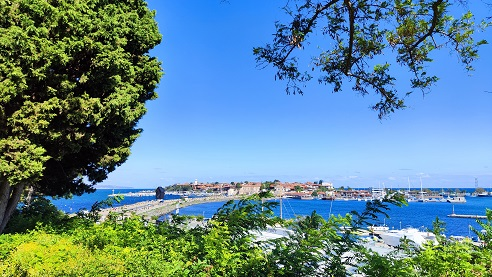
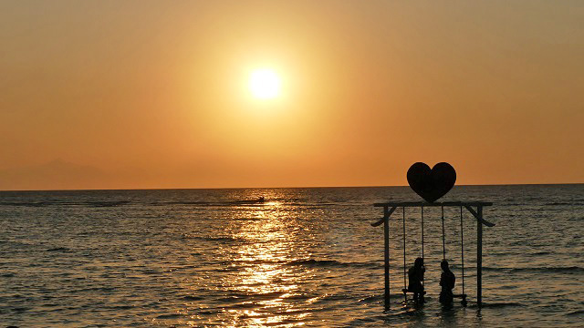
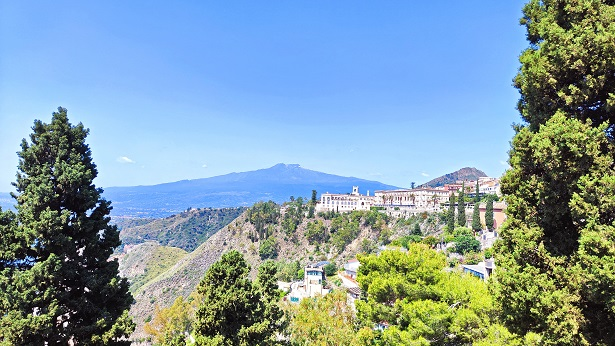
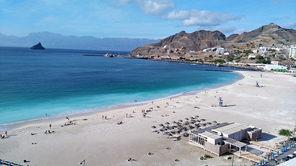

A Világ felfedezése csak Rád vár!
Tengerparti utazás, városlátogatás, netán egzotikus utazás?! Legyen szó bármilyen jellegű utazásról nálunk évszaktól és típustól függetlenül könnyedén megtalálhatod. Tekintsd át a legnépszerűbb úti céljainkból összeállított rövid útikalauzokat, majd válaszd ki a számodra legmegfelelőbb ajánlatot! Rajtunk keresztül könnyedén tervezheted meg és foglalhatod le életed utazását, hogy a világ minden szegletét felfedezhesd. Ne habozz, válaszd ki álmaid úti célját és indulj el a kalandra!
Bulgária
Bulgária lenyűgöző természeti szépségei közé tartoznak a Rodope-hegység varázslatos erdei, amelyek kristálytiszta patakok és tavak, vadregényes túraútvonalak sokaságát kínálják. A hegységben található barlangok pedig egyedülállóak és magukban foglalják a Balkán-félsziget vadregényes szépségét.

Indonézia
Bali varázslatos természeti szépségei közé tartoznak a türkizkék tengerpartok és homokos strandok, valamint a buja rizsteraszok, amelyek lélegzetelállítóan szép tájat festenek a szigeten. A trópusi dzsungel és vulkáni tájak pedig Bali gazdag és sokszínű természeti kincseinek részét képezik.

Olaszország
Fedezze fel Olaszországot! Az ország lenyűgöző kultúrája, ízletes konyhája és gazdag történelme mindenkit elvarázsol. Látogasson el Rómába, ahol az ókori csodák és a Vatikán történelme várják vagy látogasson el Szicília és Toszkána varázslatos vidékeire.

Zöld-foki Köztársaság
Zöld-foki-szigetek lenyűgöző természeti szépségei között szerepelnek a homokos strandok, amelyek kristálytiszta vízzel és lenyűgöző tengeri élettel büszkélkednek. A holdbéli tájak és az elbűvölő hegycsúcsok is hozzájárulnak a szigetek változatos természetéhez.
